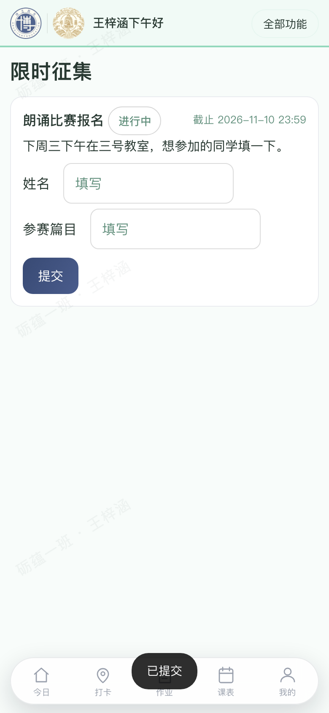
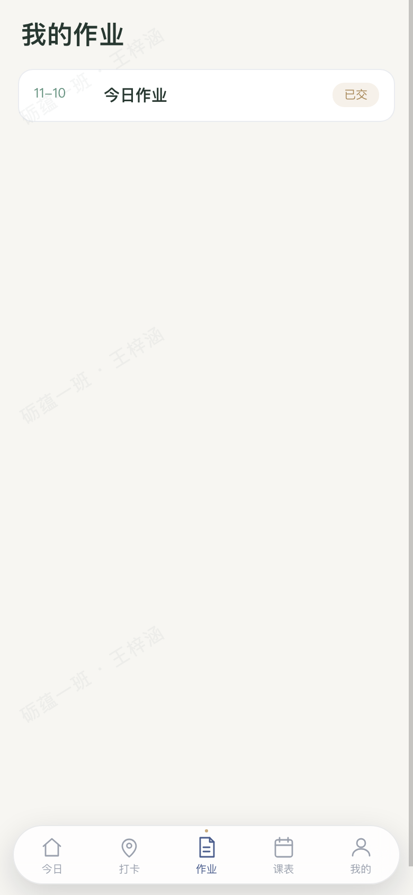
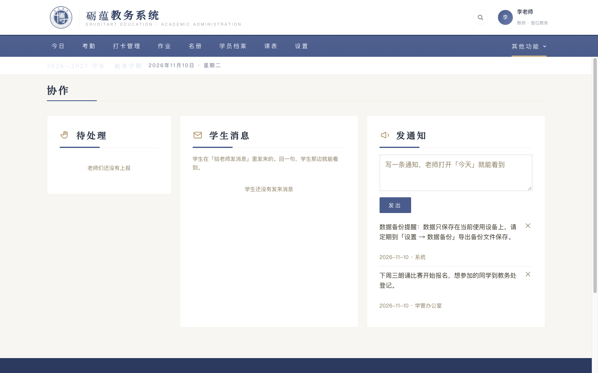
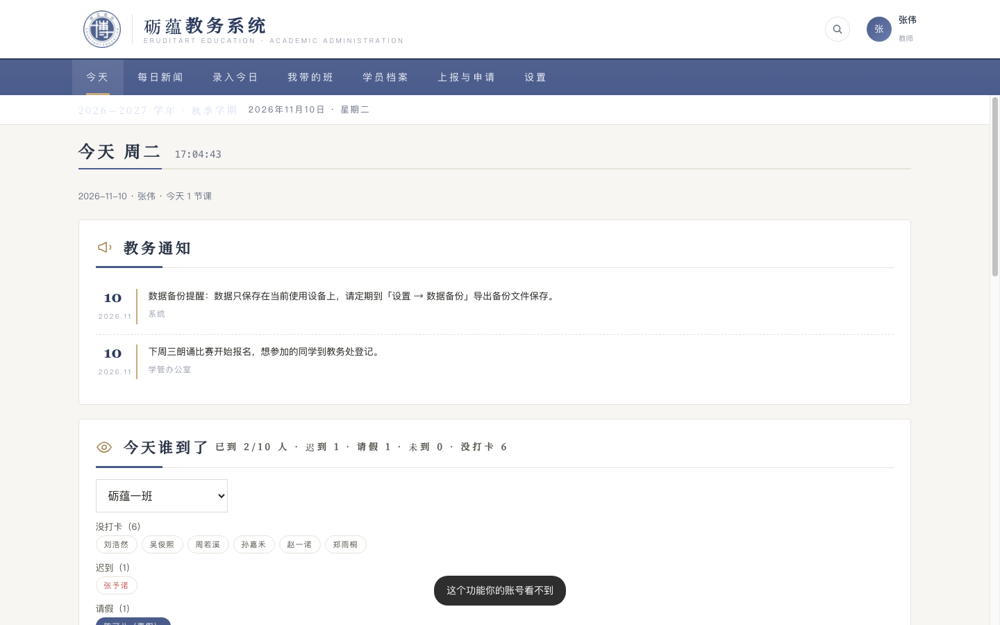
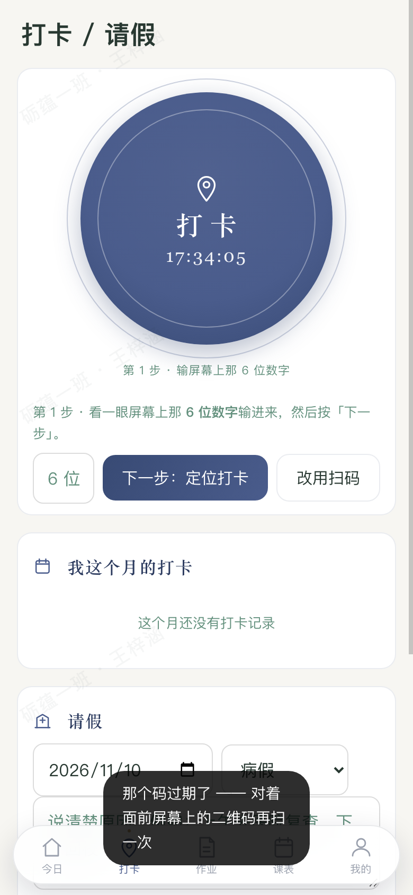
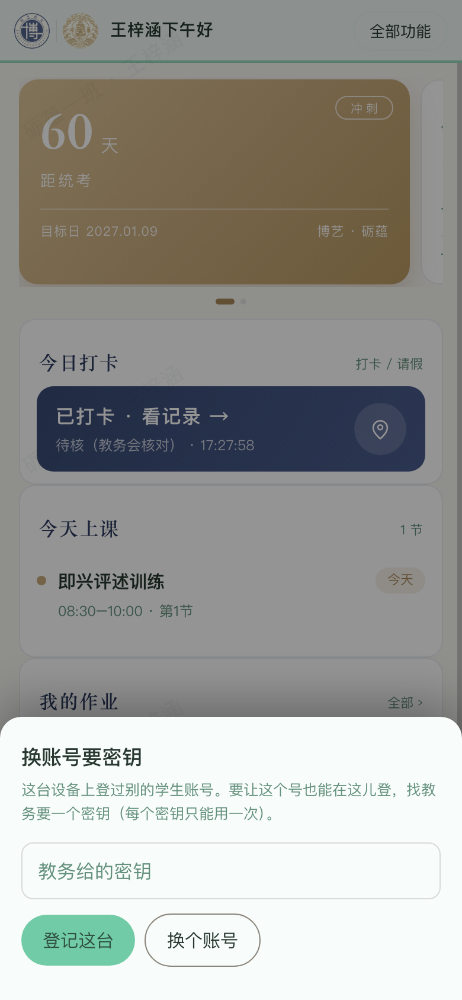
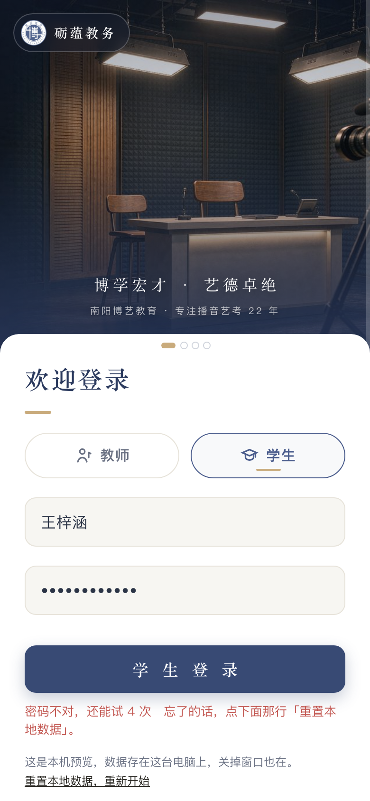
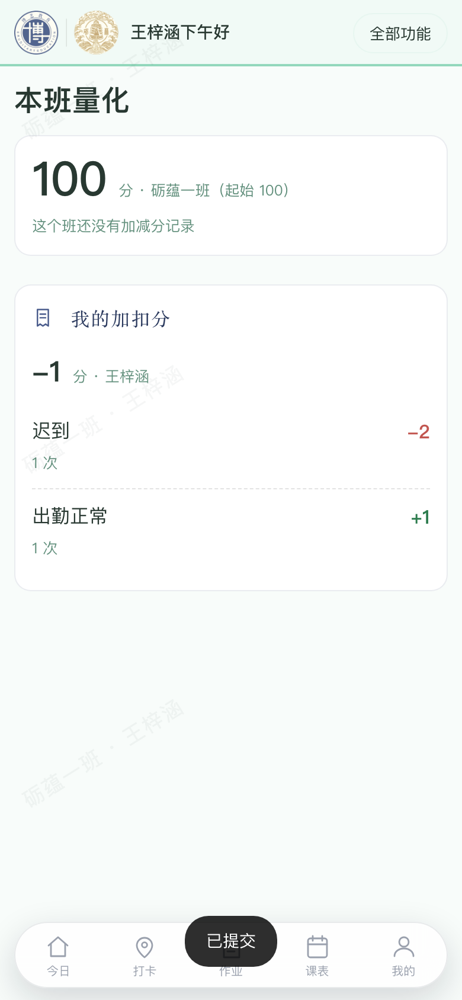
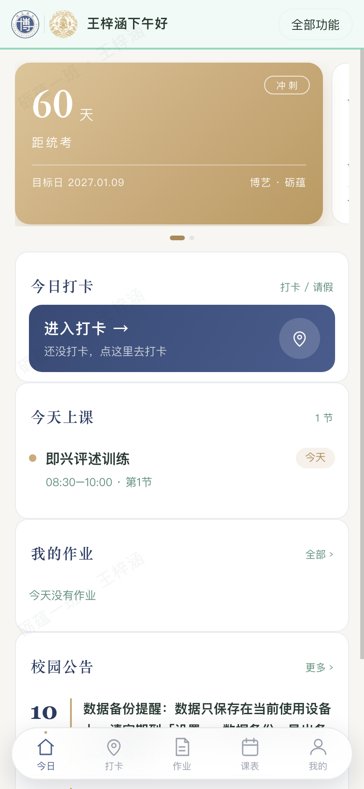
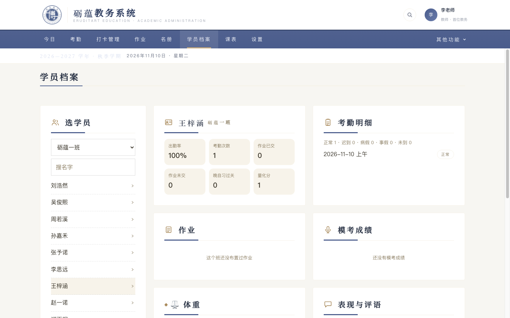

📋 砺蕴教务系统 · 试用问题图册（大白话版）
两位试用员：老师「张伟」（电脑端）+ 学生「王梓涵」（手机端）· 全部是亲手操作的真实截图 · 2026-11-10
一句话总结：学生「交没交、批没批」这两个最关心的反馈是断的；老师账号基本是个旁观者。
也有做得好的：学生打卡后，老师页面约 2.3 秒自动出现记录，不用刷新；消息能看到办公室的回复原文。
问题 1 · 学生交了活动报名，页面永远说「没交」
学生填完姓名点提交，系统弹了「已提交」。但是页面上的卡片还是写着「进行中」，填过的框也空了。
✔ 正确样子：提交后卡片立刻变成「已完成」，不再显示填写框。

问题 2 · 学生看作业，只有「已交」两个字
老师明明布置了两条作业（今天一条、昨天一条）。学生打开「我的作业」，只有一行「今日作业 已交」。写的什么内容、什么时候截止，全都看不到；昨天那条干脆消失。
✔ 正确样子：每条作业显示内容原文 + 截止时间 + 交没交。

问题 3 · 学生请假了，但没有人能批准
学生提交请假，提示「教务批准后会写进考勤」。但老师端的待处理列表里根本不显示请假这一类，找不到批准按钮。请假永远「待处理」，考勤永远不会自动改。
✔ 正确样子：老师的待处理列表里能看到请假，一键批准。

问题 4 · 老师账号点「考勤」等五个功能，全进不去
老师登录后点「考勤」（还有作业、课表、打卡、协作），页面只闪一下提示就没了，什么也做不了。老师能用的只有今日、新闻、记录、我的班。
✔ 这一条要您拍板：到底让不让老师做考勤/作业/排课？

问题 5 · 手输错打卡码，提示却说「码过期了」
学生手动输入了一个错误的码，系统说「码过期了，再扫一次」。输错和过期是两回事，而且人家是手输的，让他去扫码。
✔ 正确样子：说「码不对，请核对屏幕上的数字」。

问题 6 · 换手机登录，提示的理由是编的
学生换新手机第一次登录，系统说「这台设备登过别的账号」——其实这台手机什么账号都没登过。
✔ 正确样子：说「新设备首次登录，需要教务给的密钥」。

问题 7 · 密码错了，提示让人去「清空本地数据」
密码输错，提示说忘了就点「重置本地数据」。可这是云端账号密码，清本地数据根本没用，反而会让人误删东西。
✔ 正确样子：提示「找教务重置密码」。

问题 8 · 量化页自己跟自己矛盾
同一页上：班卡写着「100 分 · 没有加减分记录」，个人卡写着「-1 分 · 迟到扣 2」。学生看不懂：班是满分，我怎么是负的？
✔ 正确样子：两个数字用同一个算法，或者写明区别。

问题 9 · 学生的「校园公告」第一条是系统运维提醒
置顶公告是「数据备份提醒」，署名「系统」。这不是校园公告，是技术提示，不该出现在学生公告栏第一条。
✔ 正确样子：系统提醒不出现在学生公告里。

问题 10 · 老师查学生档案，作业区数据是错的
老师点开王梓涵的档案：考勤、量化都有，作业区却写「这个班还没布置过作业 · 已交 0」——跟作业页的事实相反。
✔ 正确样子：档案作业区跟作业页显示一致。
